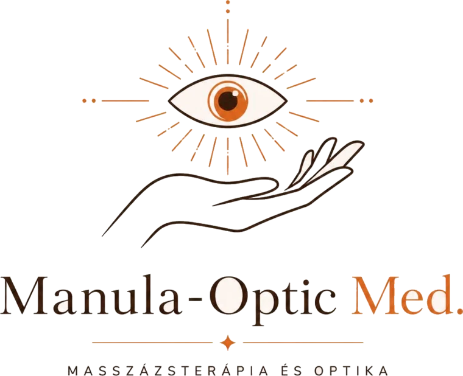

Ugrás a választóhoz
Gyógymasszázs
Rehabilitáció
Svédmasszázs, nyirokdrenázs és rehabilitáció — szakmai, gyógyászati alapokon.
Belépés
Optika
Látásvizsgálat
Szemüvegjavítás, dizájner keretek és személyre szabott lencsék prémium szalonban.
Belépés

Válasszon szolgáltatást